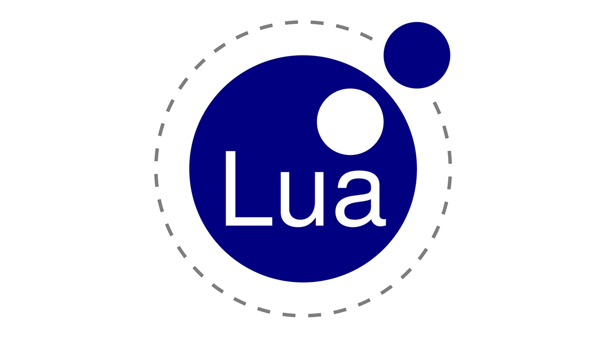
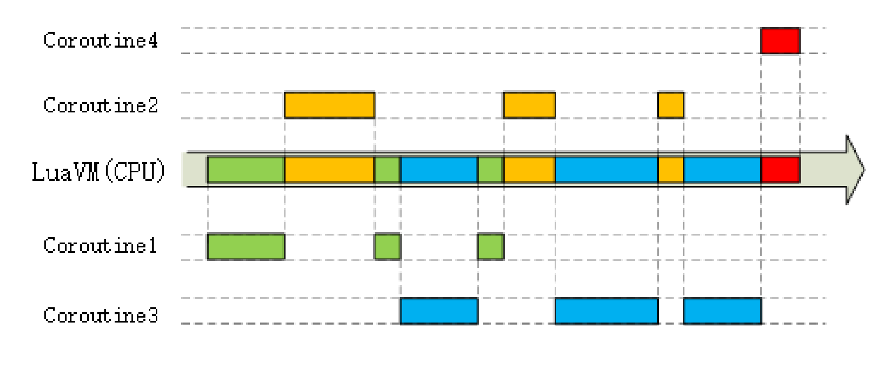
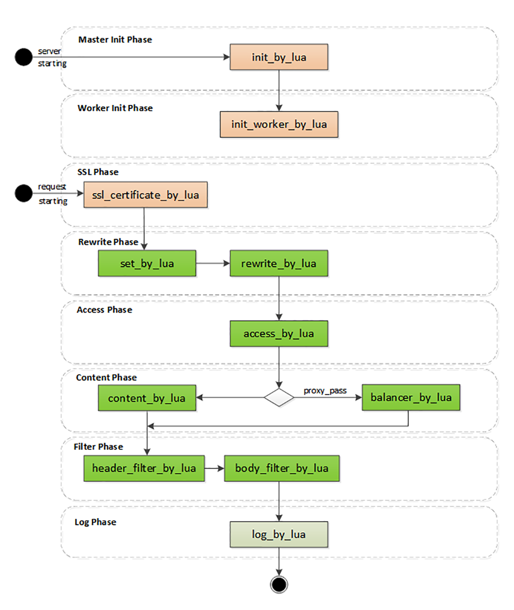

- 00 开篇词｜To Be a HTTP Hero.md
- 01 时势与英雄：HTTP的前世今生.md
- 02 HTTP是什么？HTTP又不是什么？.md
- 03 HTTP世界全览（上）：与HTTP相关的各种概念.md
- 04 HTTP世界全览（下）：与HTTP相关的各种协议.md
- 05 常说的“四层”和“七层”到底是什么？“五层”“六层”哪去了？.md
- 06 域名里有哪些门道？.md
- 07 自己动手，搭建HTTP实验环境.md
- 08 键入网址再按下回车，后面究竟发生了什么？.md
- 09 HTTP报文是什么样子的？.md
- 10 应该如何理解请求方法？.md
- 11 你能写出正确的网址吗？.md
- 12 响应状态码该怎么用？.md
- 13 HTTP有哪些特点？.md
- 14 HTTP有哪些优点？又有哪些缺点？.md
- 15 海纳百川：HTTP的实体数据.md
- 16 把大象装进冰箱：HTTP传输大文件的方法.md
- 17 排队也要讲效率：HTTP的连接管理.md
- 18 四通八达：HTTP的重定向和跳转.md
- 19 让我知道你是谁：HTTP的Cookie机制.md
- 20 生鲜速递：HTTP的缓存控制.md
- 21 良心中间商：HTTP的代理服务.md
- 22 冷链周转：HTTP的缓存代理.md
- 23 HTTPS是什么？SSLTLS又是什么？.md
- 24 固若金汤的根本（上）：对称加密与非对称加密.md
- 25 固若金汤的根本（下）：数字签名与证书.md
- 26 信任始于握手：TLS1.2连接过程解析.md
- 27 更好更快的握手：TLS1.3特性解析.md
- 28 连接太慢该怎么办：HTTPS的优化.md
- 29 我应该迁移到HTTPS吗？.md
- 30 时代之风（上）：HTTP2特性概览.md
- 31 时代之风（下）：HTTP2内核剖析.md
- 32 未来之路：HTTP3展望.md
- 33 我应该迁移到HTTP2吗？.md
- 34 Nginx：高性能的Web服务器.md
- 35 OpenResty：更灵活的Web服务器.md
- 36 WAF：保护我们的网络服务.md
- 37 CDN：加速我们的网络服务.md
- 38 WebSocket：沙盒里的TCP.md
- 39 HTTP性能优化面面观（上）.md
- 40 HTTP性能优化面面观（下）.md
- 结束语 做兴趣使然的Hero.md
35 OpenResty：更灵活的Web服务器
在上一讲里，我们看到了高性能的 Web 服务器 Nginx，它资源占用少，处理能力高，是搭建网站的首选。
虽然 Nginx 成为了 Web 服务器领域无可争议的“王者”，但它也并不是没有缺点的，毕竟它已经 15 岁了。
“一个人很难超越时代，而时代却可以轻易超越所有人”，Nginx 当初设计时针对的应用场景已经发生了变化，它的一些缺点也就暴露出来了。
Nginx 的服务管理思路延续了当时的流行做法，使用磁盘上的静态配置文件，所以每次修改后必须重启才能生效。
这在业务频繁变动的时候是非常致命的（例如流行的微服务架构），特别是对于拥有成千上万台服务器的网站来说，仅仅增加或者删除一行配置就要分发、重启所有的机器，对运维是一个非常大的挑战，要耗费很多的时间和精力，成本很高，很不灵活，难以“随需应变”。
那么，有没有这样的一个 Web 服务器，它有 Nginx 的优点却没有 Nginx 的缺点，既轻量级、高性能，又灵活、可动态配置呢？
这就是我今天要说的 OpenResty，它是一个“更好更灵活的 Nginx”。
OpenResty 是什么？
其实你对 OpenResty 并不陌生，这个专栏的实验环境就是用 OpenResty 搭建的，这么多节课程下来，你应该或多或少对它有了一些印象吧。
OpenResty 诞生于 2009 年，到现在刚好满 10 周岁。它的创造者是当时就职于某宝的“神级”程序员章亦春，网名叫“agentzh”。
OpenResty 并不是一个全新的 Web 服务器，而是基于 Nginx，它利用了 Nginx 模块化、可扩展的特性，开发了一系列的增强模块，并把它们打包整合，形成了一个**“一站式”的 Web 开发平台**。
虽然 OpenResty 的核心是 Nginx，但它又超越了 Nginx，关键就在于其中的 ngx_lua 模块，把小巧灵活的 Lua 语言嵌入了 Nginx，可以用脚本的方式操作 Nginx 内部的进程、多路复用、阶段式处理等各种构件。
脚本语言的好处你一定知道，它不需要编译，随写随执行，这就免去了 C 语言编写模块漫长的开发周期。而且 OpenResty 还把 Lua 自身的协程与 Nginx 的事件机制完美结合在一起，优雅地实现了许多其他语言所没有的“同步非阻塞”编程范式，能够轻松开发出高性能的 Web 应用。
目前 OpenResty 有两个分支，分别是开源、免费的“OpenResty”和闭源、商业产品的“OpenResty+”，运作方式有社区支持、OpenResty 基金会、OpenResty.Inc 公司，还有其他的一些外界赞助（例如 Kong、CloudFlare），正在蓬勃发展。
顺便说一下 OpenResty 的官方 logo，是一只展翅飞翔的海鸥，选择海鸥是因为“鸥”与 OpenResty 的发音相同。另外，这个 logo 的形状也像是左手比出的一个“OK”姿势，正好也是一个“O”。
动态的 Lua
刚才说了，OpenResty 里的一个关键模块是 ngx_lua，它为 Nginx 引入了脚本语言 Lua。
Lua 是一个比较“小众”的语言，虽然历史比较悠久，但名气却没有 PHP、Python、JavaScript 大，这主要与它的自身定位有关。

Lua 的设计目标是嵌入到其他应用程序里运行，为其他编程语言带来“脚本化”能力，所以它的“个头”比较小，功能集有限，不追求“大而全”，而是“小而美”，大多数时间都“隐匿”在其他应用程序的后面，是“无名英雄”。
你或许玩过或者听说过《魔兽世界》《愤怒的小鸟》吧，它们就在内部嵌入了 Lua，使用 Lua 来调用底层接口，充当“胶水语言”（glue language），编写游戏逻辑脚本，提高开发效率。
OpenResty 选择 Lua 作为“工作语言”也是基于同样的考虑。因为 Nginx C 开发实在是太麻烦了，限制了 Nginx 的真正实力。而 Lua 作为“最快的脚本语言”恰好可以成为 Nginx 的完美搭档，既可以简化开发，性能上又不会有太多的损耗。
作为脚本语言，Lua 还有一个重要的“代码热加载”特性，不需要重启进程，就能够从磁盘、Redis 或者任何其他地方加载数据，随时替换内存里的代码片段。这就带来了“动态配置”，让 OpenResty 能够永不停机，在微秒、毫秒级别实现配置和业务逻辑的实时更新，比起 Nginx 秒级的重启是一个极大的进步。
你可以看一下实验环境的“www/lua”目录，里面存放了我写的一些测试 HTTP 特性的 Lua 脚本，代码都非常简单易懂，就像是普通的英语“阅读理解”，这也是 Lua 的另一个优势：易学习、易上手。
高效率的 Lua
OpenResty 能够高效运行的一大“秘技”是它的“同步非阻塞”编程范式，如果你要开发 OpenResty 应用就必须时刻铭记于心。
“同步非阻塞”本质上还是一种“多路复用”，我拿上一讲的 Nginx epoll 来对比解释一下。
epoll 是操作系统级别的“多路复用”，运行在内核空间。而 OpenResty 的“同步非阻塞”则是基于 Lua 内建的“协程”，是应用程序级别的“多路复用”，运行在用户空间，所以它的资源消耗要更少。
OpenResty 里每一段 Lua 程序都由协程来调度运行。和 Linux 的 epoll 一样，每当可能发生阻塞的时候“协程”就会立刻切换出去，执行其他的程序。这样单个处理流程是“阻塞”的，但整个 OpenResty 却是“非阻塞的”，多个程序都“复用”在一个 Lua 虚拟机里运行。

下面的代码是一个简单的例子，读取 POST 发送的 body 数据，然后再发回客户端：
ngx.req.read_body() -- 同步非阻塞 (1)
local data = ngx.req.get_body_data()
if data then
ngx.print("body: ", data) -- 同步非阻塞 (2)
end
代码中的“ngx.req.read_body”和“ngx.print”分别是数据的收发动作，只有收到数据才能发送数据，所以是“同步”的。
但即使因为网络原因没收到或者发不出去，OpenResty 也不会在这里阻塞“干等着”，而是做个“记号”，把等待的这段 CPU 时间用来处理其他的请求，等网络可读或者可写时再“回来”接着运行。
假设收发数据的等待时间是 10 毫秒，而真正 CPU 处理的时间是 0.1 毫秒，那么 OpenResty 就可以在这 10 毫秒内同时处理 100 个请求，而不是把这 100 个请求阻塞排队，用 1000 毫秒来处理。
除了“同步非阻塞”，OpenResty 还选用了LuaJIT作为 Lua 语言的“运行时（Runtime）”，进一步“挖潜增效”。
LuaJIT 是一个高效的 Lua 虚拟机，支持 JIT（Just In Time）技术，可以把 Lua 代码即时编译成“本地机器码”，这样就消除了脚本语言解释运行的劣势，让 Lua 脚本跑得和原生 C 代码一样快。
另外，LuaJIT 还为 Lua 语言添加了一些特别的增强，比如二进制位运算库 bit，内存优化库 table，还有 FFI（Foreign Function Interface），让 Lua 直接调用底层 C 函数，比原生的压栈调用快很多。
阶段式处理
和 Nginx 一样，OpenResty 也使用“流水线”来处理 HTTP 请求，底层的运行基础是 Nginx 的“阶段式处理”，但它又有自己的特色。
Nginx 的“流水线”是由一个个 C 模块组成的，只能在静态文件里配置，开发困难，配置麻烦（相对而言）。而 OpenResty 的“流水线”则是由一个个的 Lua 脚本组成的，不仅可以从磁盘上加载，也可以从 Redis、MySQL 里加载，而且编写、调试的过程非常方便快捷。
下面我画了一张图，列出了 OpenResty 的阶段，比起 Nginx，OpenResty 的阶段更注重对 HTTP 请求响应报文的加工和处理。

OpenResty 里有几个阶段与 Nginx 是相同的，比如 rewrite、access、content、filter，这些都是标准的 HTTP 处理。
在这几个阶段里可以用“xxx_by_lua”指令嵌入 Lua 代码，执行重定向跳转、访问控制、产生响应、负载均衡、过滤报文等功能。因为 Lua 的脚本语言特性，不用考虑内存分配、资源回收释放等底层的细节问题，可以专注于编写非常复杂的业务逻辑，比 C 模块的开发效率高很多，即易于扩展又易于维护。
OpenResty 里还有两个不同于 Nginx 的特殊阶段。
一个是“init 阶段”，它又分成“master init”和“worker init”，在 master 进程和 worker 进程启动的时候运行。这个阶段还没有开始提供服务，所以慢一点也没关系，可以调用一些阻塞的接口初始化服务器，比如读取磁盘、MySQL，加载黑白名单或者数据模型，然后放进共享内存里供运行时使用。
另一个是“ssl 阶段”，这算得上是 OpenResty 的一大创举，可以在 TLS 握手时动态加载证书，或者发送“OCSP Stapling”。
还记得[第 29 讲]里说的“SNI 扩展”吗？Nginx 可以依据“服务器名称指示”来选择证书实现 HTTPS 虚拟主机，但静态配置很不灵活，要编写很多雷同的配置块。虽然后来 Nginx 增加了变量支持，但它每次握手都要读磁盘，效率很低。
而在 OpenResty 里就可以使用指令“ssl_certificate_by_lua”，编写 Lua 脚本，读取 SNI 名字后，直接从共享内存或者 Redis 里获取证书。不仅没有读盘阻塞，而且证书也是完全动态可配置的，无需修改配置文件就能够轻松支持大量的 HTTPS 虚拟主机。
小结
- Nginx 依赖于磁盘上的静态配置文件，修改后必须重启才能生效，缺乏灵活性；
- OpenResty 基于 Nginx，打包了很多有用的模块和库，是一个高性能的 Web 开发平台；
- OpenResty 的工作语言是 Lua，它小巧灵活，执行效率高，支持“代码热加载”；
- OpenResty 的核心编程范式是“同步非阻塞”，使用协程，不需要异步回调函数；
- OpenResty 也使用“阶段式处理”的工作模式，但因为在阶段里执行的都是 Lua 代码，所以非常灵活，配合 Redis 等外部数据库能够实现各种动态配置。
课下作业
- 谈一下这些天你对实验环境里 OpenResty 的感想和认识。
- 你觉得 Nginx 和 OpenResty 的“阶段式处理”有什么好处？对你的实际工作有没有启发？
欢迎你把自己的学习体会写在留言区，与我和其他同学一起讨论。如果你觉得有所收获，也欢迎把文章分享给你的朋友。